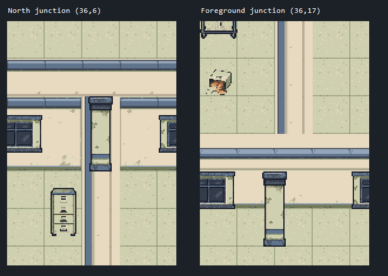
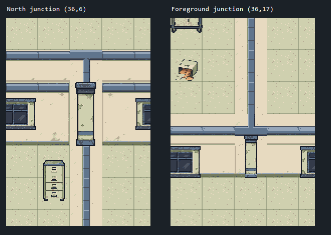
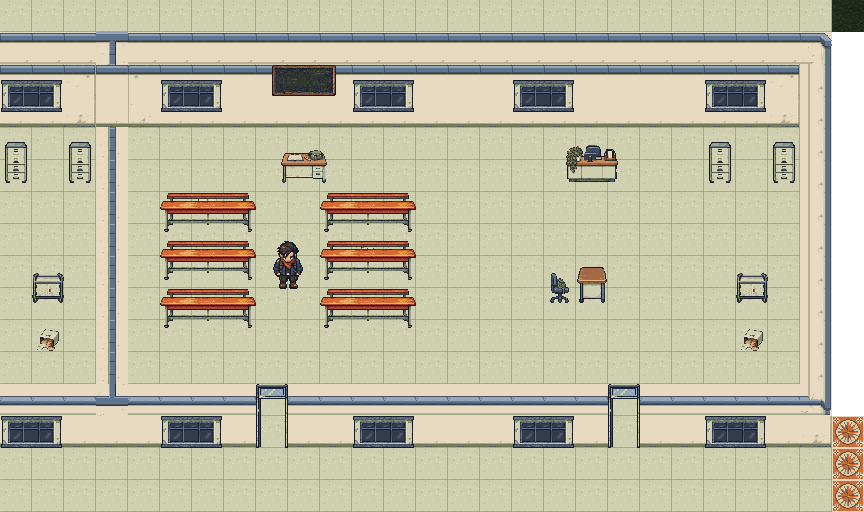
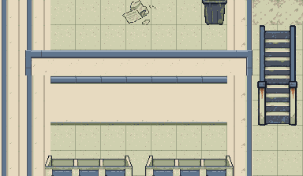
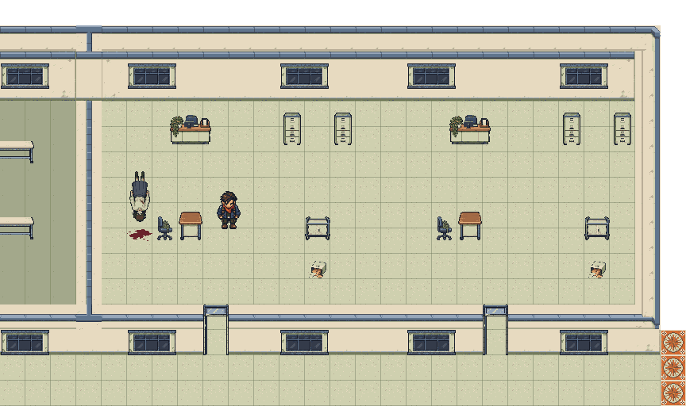
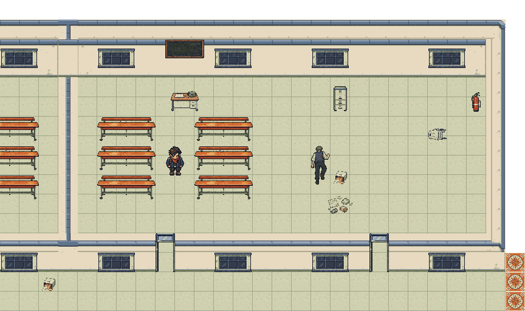

Superseded: the ornamental column presentation below was rejected. Open the current flush-wall correction.
Building C: connected wall assembly
Editable Tiled authoring review. Three aligned floors, 42 physical room regions. This is not a playable multi-floor runtime candidate.
Complete Building C board | Detailed review | Source/render identity
Same locations, before and after

Before: the shared endpoint became a straight horizontal tile. The gallery column was detached below it.
After: the common outline selects authored T joins and a centered partition. The short foreground support uses the wall-face anchor.How the asset system is divided
| Part | Responsibility |
|---|
| Caps and returns | The connected top of the wall; shared N/E/S/W shapes have their own authored tiles. |
| North face and foreground skirt | Projected room height; a shared horizontal wall has one face owner. |
| Doors, windows and columns | Authored attachments placed from geometry and metadata. |
| Logical footprint | Design/collision guide remains separate from the pixels and visible height. |
Shared connections are unioned from coincident room outlines after doorway removal. Neighboring parallel outlines do not become accidental ladder junctions. The six new parts cover this building's required shared shapes; unsupported combinations reject construction.
Floor 0

Shared classroom: original doors, windows, room dressing and actor scale are retained.
Different room geometry, same shared-wall assembly.
Floor 1

Shared classroom: original doors, windows, room dressing and actor scale are retained.Different room geometry, same shared-wall assembly.
Floor 2

Shared classroom: original doors, windows, room dressing and actor scale are retained.Different room geometry, same shared-wall assembly.
Current map SHA-256: dfeb559306d92742c216443f387845cbe0ddd64841b45f5d827555028fbc3e68. Original source art is preserved. Generated exports, HTML and captures remain under build/.